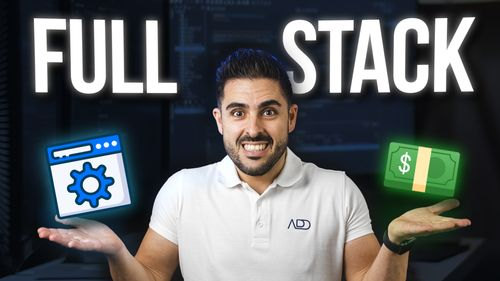

Todo lo que necesitas saber convertirte en desarrollador FullStack profesional.
Sin letra pequeña. No necesitarás comprar ninguna otra formación.
Tecnologías para ser Full-Stack Developer - Roadmap Completo
Un desarrollador Full-Stack debe poder estar involucrado en todas las partes que componen una aplicación web. Esto significa, que debe controlar todos los aspectos del funcionamiento de la herramienta, desde las dos vertientes principales: el Frontend y el Backend. Este doble conocimiento le va a facilitar su tarea diaria y un mejor seguimiento y supervisión del proyecto, ya que va a poder evaluar desde un prisma completo, si una funcionalidad va a ser fácil de aplicar o por el contrario llevará más recursos de lo habitual el poder desarrollarla.
¿Qué es un Full-Stack Developer? Alta demanda y Buenos salarios

“FullStack”, ese término tan de moda que escuchas cada día en los anuncios de Instagram, de Facebook y hasta en los periódicos digitales de hoy en día. ¿Pero te has preguntado alguna vez si sabes realmente lo que es un Desarrollador Full-Stack.?
Soy Bienvenido Sáez, mentor de HTML, CSS y JavaScript en el Máster de Desarrollo Full-Stack y Blockchain de Conquer Blocks y en este post vamos a profundizar en uno de los perfiles más importantes dentro del mundo del desarrollo web. Vamos a intentar definir qué se puede considerar un desarrollador Full-Stack y sobre todo, animarte a llegar a ser uno de esos unicornios que son tan buscados por las empresas de desarrollo.